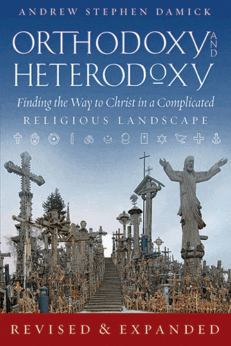
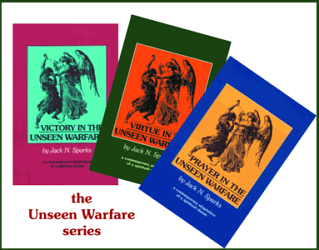
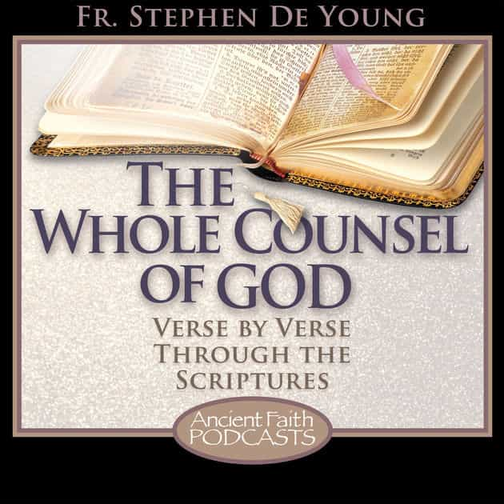
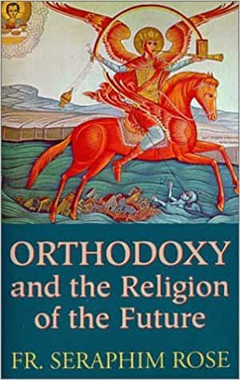

Michael is a copywriter, an author, and a marketing consultant. You can buy his books at his Amazon page here.


In the comment section of a recent article, I was asked what resources I’d recommend for those seeking the bulwark of Christian spirituality in these trying times. Given the endless number of books and videos out there—some of which are spiritually quite misleading and dangerous—I thought I’d make a list of my personal recommendations for those of you interested in either starting or deepening your walk down this path.
Here is the list of my current top 5, in no particular order.
In this video series, Deacon Ezra (a Subdeacon at the time of filming) explains the entire history and development of the early Church. If you are a Protestant who has ever wondered what happened after the events described in the Book of Acts, this is a fantastic place to learn the answer to that question. If you aren’t a Christian at all—but are interested in the religion’s development as a matter of purely intellectual learning—you will still find much to appreciate here.
You will learn about the various regions of the ancient world, who ran them, where the Apostles went, and what they did there. You will also learn about the development of Holy Scripture within the context of Holy Tradition, and how these teachings were passed down over time. This series is so in-depth and educational that it was one of the final catalysts for my conversion from Protestantism to Orthodoxy.
If you want to watch the series from start-to-finish (which I recommend doing), here is the first video:

I have read hundreds (if not thousands) of texts on comparative religion and philosophy. Many are dense and difficult to read, while many others simply compare systems side-by-side with no standard against which all are compared.
In this book by Father Andrew Stephen Damick, Orthodox Christianity is that standard. Everything else under the Christian umbrella is described in terms of how it broke away from the Ancient Faith, while giving due acknowledgment to those aspects of the Truth which they have in common with it. The book is easy to read and highly educational, explaining in great detail the theological and dogmatic differences between both various Christian denominations and non-Christian religions.

Outside of Holy Scripture, the Unseen Warfare series is my favorite set of spiritual texts. Originally written by the Roman Catholic monk Lorenzo Scupoli, it was later translated and edited by the Orthodox Saints Nicodemus of the Holy Mountain and Theophan the Recluse. It was then translated once more into English, and re-arranged into its present format by Father Jack Sparks (an ex-Protestant who converted to Orthodoxy).
Unlike the other resources in this list, Unseen Warfare contains practical instructions on how to draw nearer to God and submit your own will to His. Though the writing is simple, each page contains a wealth of wisdom worth spending considerable time digesting.
Occasionally, there can be a tendency among Christians to focus so heavily on head-knowledge that they forget the simplicity and grace of the Gospel. It is important to remember that Christianity is a not a religion of the intellect, but a religion of the heart. Whereas the other resources on this list will dramatically deepen your mental understanding of Christianity, Unseen Warfare skips the history and goes straight to the transformative core of its practices.
Each of the three books in this series is relatively short in terms of page-count, but they will take you plenty of time to work through if you follow their instruction properly. You can find the books either separately, or bound together in a single volume.

If you want to understand the Bible in its proper context, it’s imperative to learn from those who understand said context in the first place. The idea that anyone can pick up Scripture and understand it right away, either of their own accord or by “inspiration of the Holy Spirit,” is a fairly modern invention that was never intended by the men who wrote its various books and letters.
The Whole Counsel Of God podcast is a gargantuan undertaking by Father Stephen DeYoung, an ex-Protestant pastor and Bible teacher who became an Orthodox priest. He goes through Scripture, line-by-line, filling in the details and context of every single verse.

This is one of those books that will open your eyes to a wide variety of cultural, religious, spiritual, and social phenomena all at the same time. In Orthodoxy And The Religion Of The Future, Father Seraphim Rose wrote (way back in the 70s) about the various streams of occult and Eastern spirituality which were beginning to infect American Christian culture.
He pulls absolutely no punches in this book, describing in detail why so many different highly-appealing belief systems end up being so spiritually dangerous to their practitioners. As I’ve mentioned in the comment sections of various articles, I traveled through a wide variety of these systems myself—experiencing spiritual visions and phenomena which had me utterly convinced of their truth at the time.
Rose’s book succinctly describes what these kinds of phenomena truly are, and really lays bare just how deep into delusion a person can get when their minds, hearts, and souls are unprepared for the spiritual warfare taking place every moment of our lives. I can confirm from personal experience that, unguarded by a proper understanding of said warfare, we are easy prey for demons.
As my journey continues, I have no doubt my list of favorites will evolve and change along with my understanding. But if you’ve been enjoying my articles thus far (and are curious about the path of a man who went from Jewish atheist, to gnostic Mason, to Orthodox Christian), then these are my current recommendations.
If you are a genuine seeker—of the type that is always willing to challenge your own beliefs and opinion in light of new information—then this list will keep you busy for a while. I wish you well, and good luck on your journey.
Read Next: What Is Alt-Christianity?